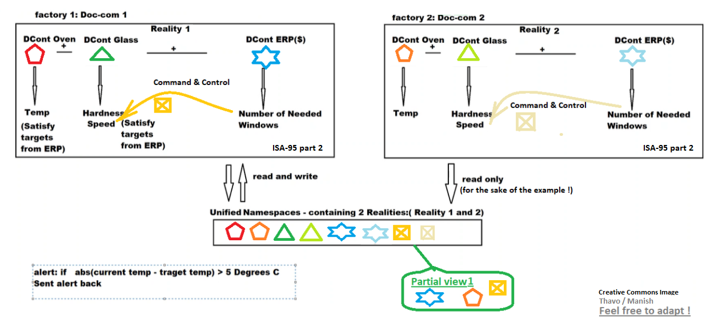

L'architecture Unified Namespace (UNS) s'est imposée comme l'architecture socle pour construire sa
transformation Digitale.
Ce qui est frustrant c'est que si on ne connait pas UNS, alors l'expert va se raccrocher à des
principes qu'il connait et avec lesquels il est à l'aise, et va penser connaitre. Mais il sera
biaisé, et peut ne pas saisir l'intérêt du sujet.
Le 31 juillet 2023, dans un rapport détaillé de 24 pages, Gartner a officiellement reconnue
l'UNS comme étant une architecture de référence.
Cela permet une collaboration moderne l'informatique industrielle (OT) et l'informatique bureautique
(IT) ensemble. (cf onglet 'Sources').
Les pictogrammes colorés sont des événements. UNS permet de tous les regrouper en temps quasi-réel, et mettre à disposition tout ou partie de cela. Dans cette illustration, admettons que le service Marketing n'a besoin que d'une vue partielle d'informations. Alors il n'accède qu'à la partie "partial view 1".
Ce site est public et Open Source, en mode "Creative Commons", disponible sur le lien Github : https://github.com/uns-manifesto/uns-manifesto.github.io/